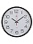

We work with
Amazing Services

Photography
Обоняние - путь к ярким ассоциациям и исцелению, о чем часто забывают
Web Design
Обоняние - путь к ярким ассоциациям и исцелению, о чем часто забывают
Creativity
Обоняние - путь к ярким ассоциациям и исцелению, о чем часто забывают
SEO
Обоняние - путь к ярким ассоциациям и исцелению, о чем часто забывают
CSS/HTML
Обоняние - путь к ярким ассоциациям и исцелению, о чем часто забывают
Digital
Обоняние - путь к ярким ассоциациям и исцелению, о чем часто забывают